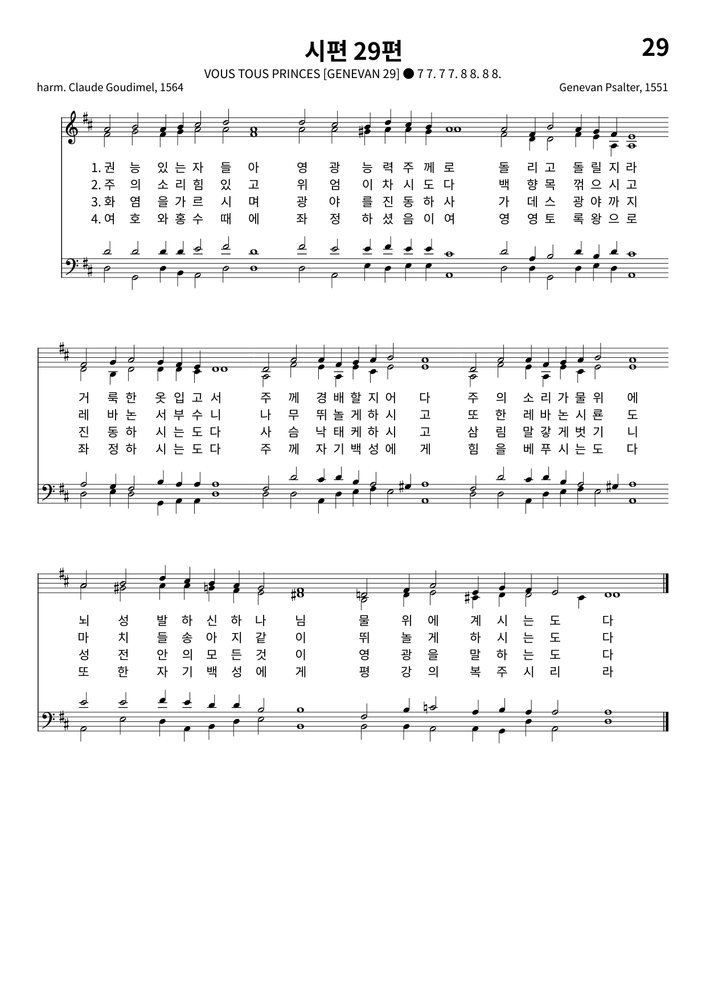

Psalm 29
VOUS TOUS PRINCES [GENEVAN 29] · 7 7. 7 7. 8 8. 8 8.
English title: O You Mighty, Give the LORD
Tune: Genevan Psalter, 1551 · Harmony: Claude Goudimel, 1564 · Lyrics: Korean adaptation of Psalm 29 from the Korean Revised Version (AI draft adaptation · not yet theologically reviewed) · 4 stanzas
Score PDF MusicXML (for printing) MusicXML (for accompaniment, with prelude and repeats) Read Psalm 29 (Korean Revised Version)
Score
← Psalm 28 ListAccompaniment (in preparation)Psalm 30 →
Lyrics (Korean)
Stanza 1
권능 있는 자들아
영광 능력 주께로
돌리고 돌릴지라
거룩한 옷 입고서
주께 경배할지어다
주의 소리가 물 위에
뇌성 발하신 하나님
물 위에 계시는도다
권능 있는 자들아
영광 능력 주께로
돌리고 돌릴지라
거룩한 옷 입고서
주께 경배할지어다
주의 소리가 물 위에
뇌성 발하신 하나님
물 위에 계시는도다
Stanza 2
주의 소리 힘 있고
위엄이 차시도다
백향목 꺾으시고
레바논서 부수니
나무 뛰놀게 하시고
또한 레바논 시룐도
마치 들송아지 같이
뛰놀게 하시는도다
주의 소리 힘 있고
위엄이 차시도다
백향목 꺾으시고
레바논서 부수니
나무 뛰놀게 하시고
또한 레바논 시룐도
마치 들송아지 같이
뛰놀게 하시는도다
Stanza 3
화염을 가르시며
광야를 진동하사
가데스 광야까지
진동하시는도다
사슴 낙태케 하시고
삼림 말갛게 벗기니
성전 안의 모든 것이
영광을 말하는도다
화염을 가르시며
광야를 진동하사
가데스 광야까지
진동하시는도다
사슴 낙태케 하시고
삼림 말갛게 벗기니
성전 안의 모든 것이
영광을 말하는도다
Stanza 4
여호와 홍수 때에
좌정하셨음이여
영영토록 왕으로
좌정하시는도다
주께 자기 백성에게
힘을 베푸시는도다
또한 자기 백성에게
평강의 복 주시리라
여호와 홍수 때에
좌정하셨음이여
영영토록 왕으로
좌정하시는도다
주께 자기 백성에게
힘을 베푸시는도다
또한 자기 백성에게
평강의 복 주시리라